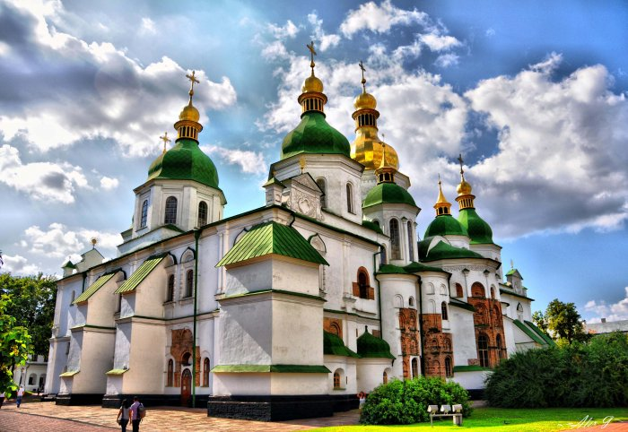
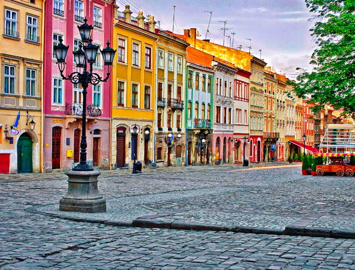
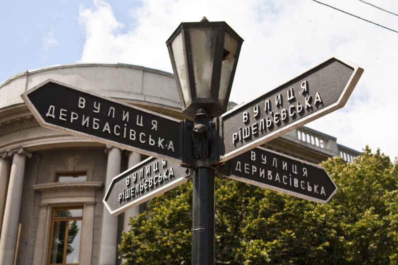

Частина 1: Початок подорожі
Доброго дня, шановні туристи! Я - ваш гід, і я розповім вам про подорож Україною.
Наша подорож починається в Києві, столиці України. Це стародавнє місто з багатою історією і культурою. Тут ви зможете побачити Софійський собор, Андріївський узвіз, Золоті ворота та інші історичні пам'ятки.
Частина 2: Київ
Ми проводимо кілька днів у Києві, гуляючи по стародавньому місту, відвідуючи його музеї та пам'ятники. Ми бачимо Софійський собор, який є одним з найважливіших православних храмів світу. Ми також відвідуємо Андріївський узвіз, який є пішохідною вулицею, де розташовані численні магазини, галереї та ресторани. Ми також відвідуємо Золоті ворота, які є однією з найвідоміших пам'яток Києва.
Частина 3: Львів
Наступним містом, яке ми відвідуємо, є Львів. Це місто з європейською атмосферою, яке розташоване на заході України.
Ми гуляємо по вузьких вуличках Львова, відвідуємо його церкви та костели. Ми також спробуємо традиційні українські страви в місцевих ресторанах.
Частина 4: Одеса
Після Львова ми відправляємося в Одесу. Це місто на півдні України, яке відоме своїми пляжами, Оперним театром та космодромом.
Ми насолоджуємося сонячним пляжем, прогулянками по набережній та відвідуванням Оперного театру. Ми також познайомимося з місцевими жителями, які є дуже гостинними.
Частина 5: Карпатські гори

З Одеси ми вирушаємо в Карпатські гори . Це гірський регіон на заході України, який відомий своїми природними красотами. Ми проводимо кілька днів, досліджуючи чарівний гірський край. Ми піднімаємося на вершини гір, милуємося краєвидами та купаємося в гірських річках.
Кінець
Це був лише короткий огляд подорожі Україною. Ми побачили багато цікавих місць і дізналися багато нового про
цю країну.
Ми сподіваємося, що вам сподобалася наша подорож.